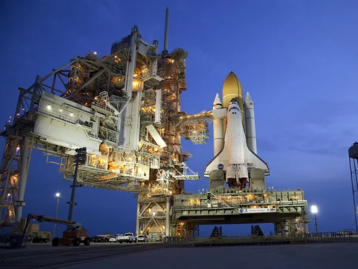
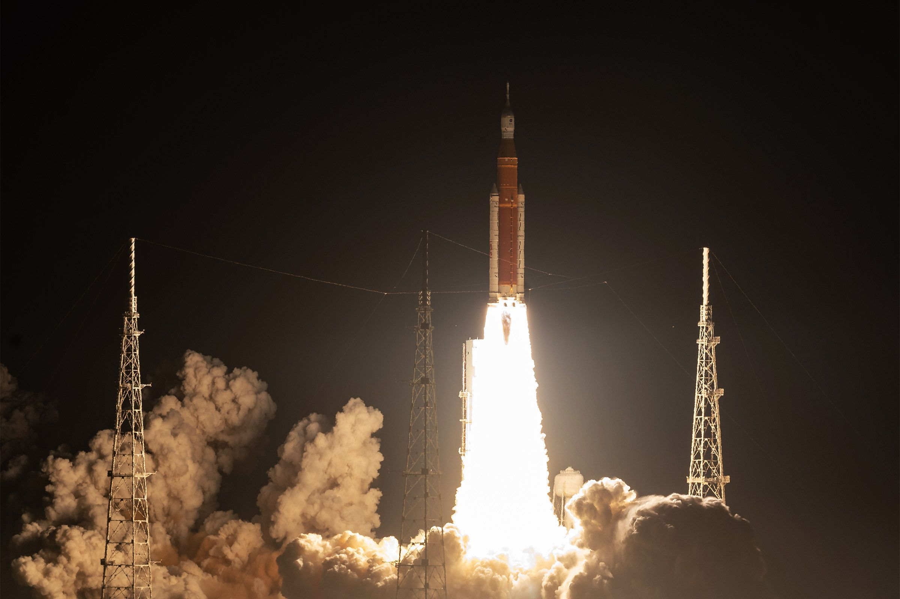
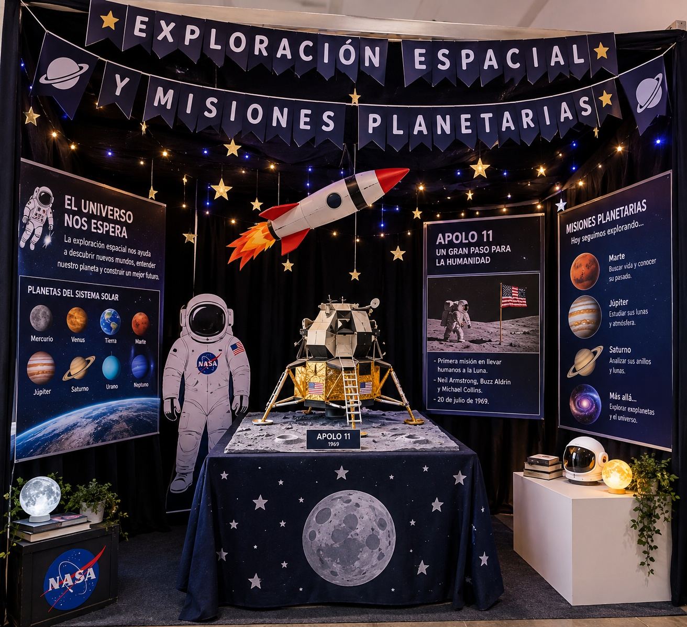

¿Te imaginas viajar más allá de la Tierra y descubrir mundos que nadie ha explorado? La exploración espacial nos acerca cada vez más a los misterios de otros planetas.
Las misiones planetarias son proyectos en los que se envían naves espaciales, robots, satélites, entre otros a otros planetas, satélites, asteroides o cometas para estudiarlos. La exploración espacial es el conjunto de actividades que realizan los seres humanos y las máquinas para aprender sobre el Universo.
La exploración espacial es fundamental para entender cómo funciona el Universo y los planetas a nuestro alrededor, así como también el propio. Además de ayudarnos a desarrollar nuevas tecnologías.
En este sitio web van a encontrar las misiones planetarias más importantes en la historia, eventos fallidos, los objetivos de nuestro trabajo, y un análisis desde la Biología, la física, la química, las matemáticas y la informática y tecnología.
Analizar la exploración espacial y las misiones planetarias para comprender sus avances, descubrimientos e importancia en el conocimiento del universo y de otros planetas.
La exploración espacial es el conjunto de actividades científicas y tecnológicas que tienen como propósito estudiar el espacio exterior, los planetas, las lunas, los asteroides, los cometas, las estrellas y otros cuerpos celestes. Para lograrlo, los seres humanos utilizan diferentes tecnologías, como cohetes, satélites, sondas espaciales, telescopios, robots y naves tripuladas.
La exploración espacial permite obtener información que no sería posible conseguir únicamente desde la Tierra. Gracias a las misiones espaciales, los científicos pueden estudiar la composición de otros planetas, observar fenómenos del Universo, conocer mejor el origen y evolución del Sistema Solar y buscar condiciones que puedan favorecer la existencia de vida.
Además, la exploración espacial ha impulsado importantes avances en áreas como la ingeniería, las telecomunicaciones, la informática y la medicina. Por esta razón, las misiones espaciales no solo buscan descubrir nuevos lugares, sino también ampliar el conocimiento científico y desarrollar tecnologías que permitan afrontar futuros desafíos de la humanidad.

La exploración espacial y las misiones planetarias son muy útiles porque permiten conocer mejor el universo, estudiar otros planetas y descubrir nuevos conocimientos científicos. Además, ayudan a desarrollar tecnologías que pueden ser útiles en la vida cotidiana y permiten comprender mejor nuestro propio planeta.
12 de 26 intentos
Históricamente, la cifra de efectividad de las misiones planetarias ha aumentado mucho gracias a los avances tecnológicos. Por ejemplo, entre 1960 y 1996, hubo 26 intentos de llegar a Marte, de los cuales solo 12 tuvieron éxito.
La exploración espacial se caracteriza por las grandes distancias, velocidades y tiempos que deben afrontar las misiones. Estas cifras permiten comprender la complejidad y magnitud de los proyectos espaciales.
2,3 millones de kilómetros: aproximadamente esa fue la distancia total recorrida por la nave Orion durante la misión Artemis I, realizada en 2022 alrededor de la Luna.
25 días, 10 horas y 53 minutos: fue la duración de la misión Artemis I, desde su lanzamiento hasta su regreso a la Tierra.
432.194 kilómetros: fue aproximadamente la máxima distancia que alcanzó Orion respecto a la Tierra durante Artemis I.
40.000 km/h: aproximadamente fue la velocidad de reentrada de Orion en la atmósfera terrestre durante Artemis I.
Más de 25.000 millones de kilómetros: Voyager 1 se encuentra actualmente a una distancia superior a 25.000 millones de kilómetros de la Tierra, convirtiéndose en uno de los objetos fabricados por el ser humano más distantes de nuestro planeta.
Más de 23 horas: debido a la enorme distancia de Voyager 1, una señal de radio puede tardar más de 23 horas en viajar desde la Tierra hasta la nave.
Estos datos muestran que una misión espacial requiere una gran cantidad de planificación, tecnología y precisión. A medida que una nave se aleja de la Tierra, aumenta el tiempo necesario para comunicarse con ella y se vuelve más difícil solucionar problemas directamente. Por eso, las naves espaciales deben contar con sistemas capaces de funcionar de manera autónoma durante largos períodos de tiempo.

Esta simulación representa visualmente un cohete viajando por el espacio. El modelo permite observar su estructura, el movimiento de rotación y elementos característicos de un viaje espacial, como las estrellas y el Sol a la distancia.
La simulación fue desarrollada utilizando HTML y JavaScript junto con la biblioteca Three.js, lo que permite crear una escena tridimensional e interactiva directamente en el navegador.
Nuestro stand va a tener luces de estrellas, un cohete colgado del techo y una maqueta del Apolo 11. También contará con una simulación digital para representar visualmente un viaje espacial.
Tendremos un juego interactivo para entender el tema y no perder el hilo, además de recompensas como motivación.
| El experimento físico muestra | El sitio web muestra |
|---|---|
| Una ambientación espacial que recrea el entorno del universo mediante luces en forma de estrellas. | Contenido informativo e interactivo relacionado con el tema del proyecto. |
| Una maqueta del Apolo 11 que representa la nave espacial utilizada durante la misión, junto con información sobre sus principales etapas y acontecimientos. | Un cohete inspirado en las misiones espaciales que permite representar visualmente un viaje por el espacio, acompañado de un juego interactivo con preguntas y recompensas sobre el tema. |
